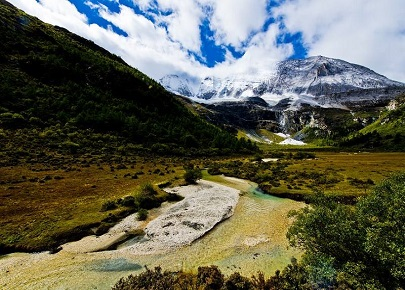
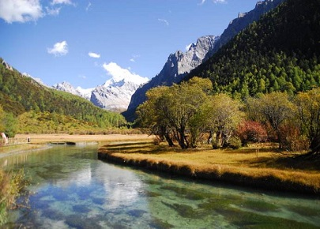

morly旅游圈
稻城亚丁风景区位于四川省甘孜藏族自治州稻城县香格里拉镇亚丁村境内，主要由“仙乃日、央迈勇、夏诺多吉”三座神山和周围的河流、湖泊和高山草甸组成，它的景致保持着在地球上近绝迹的纯粹，因其独特的地貌和原生态的自然风光，被誉为“香格里拉之魂”和“最后的香格里拉”，被国际友人誉为“水蓝色星球上的最后一片净土”，是摄影爱好者的天堂。 景区内不仅有壮丽神圣的雪山，还有辽阔的草甸、五彩斑斓的森林和碧蓝通透的海子，雪域高原最美的一切几乎都汇聚于此，这一切的一切都让人流连忘返。如当地虔诚的藏民一样，徒步转山是感受亚丁风光的最好方式。不过由于亚丁保护区海拔较高，全程徒步还是需要相当的体力。 亚丁，藏语意为“向阳之地”。保护区内的三座雪山：仙乃日、央迈勇、夏诺多吉，南北向分布，呈品字形排列，统称“念青贡嘎日松贡布”，意为：终年积雪不化的三座护法神山圣地。藏传佛教中称其为“三怙主雪山”，是藏民心中的神圣之地。 1928年，美国植物学家、探险家约瑟夫·洛克到达此地，回国后在美国《国家地理杂志》上撰文并刊登所摄照片，将亚丁介绍给了全世界。
稻城亚丁风景区以其独特的原始生态环境、雄、奇、绣、美的高品位自然风光而闻名中外。亚丁自然保护区于1996年3月经稻城县人民政府批准，成为县级自然保护区，同时成立了亚丁自然保护区管理局。1997年5月，甘孜藏族自治州人民政府批准亚丁为州级自然保护区，并成立了管理处；同年12月，经四川省人民政府批准，亚丁成为省级自然保护区。2001年6月，经国务院批准，亚丁成为国家级自然保护区。2003年7月10日，联合国教科文组织人与生物圈执行局在巴黎召开的会议上，把亚丁列入联合国MAB保护计划之中，亚丁正式加入世界人与生物圈保护区网络。亚丁自然保护区位于四川省甘孜藏族自治州稻城县南部，地理坐标为：东经99度58分----100度28分，北纬28度11分----28度34分。 地处著名的青藏高原东部横断断山脉中段。在保护区东部的小贡嘎山上，三座雪山直冲云天。北峰仙乃日，海拔6032米；南峰央迈勇和东峰夏郎多吉，海拔同为5958米。三座雪山呈品字形，巍然耸立，遥相对峙；俊秀雄奇，撼魂荡魄，在中国西部藏区被称为雪域神峰。佛经有载：世上24处圣地，一切之主是三怙主神山（即三神山之地），三峰藏名为“念青贡嘎日松贡布”，意为“三怙主雪山”，是众生朝圣积德之所在地。相传，公元八世纪，由莲花生大师为这三座雪山加持命名。 亚丁自然保护区景区海拔2900米（贡嘎河口）至6032米（仙乃日峰），面积5.6万公顷。景区以仙乃日、降边央、夏纳多吉三座雪峰为核心区，北南向分布。由于特殊的地理环境和自然气候，形成了独特的地貌和自然景观，是中国保存最完整的一处自然生态系统。保护区内仙乃日（藏语观世间菩萨）、降边央（藏语文殊菩萨）、夏纳多吉（藏语金刚手）三座雪山相距不远，各自拔地而起，呈三角鼎立，藏传佛教称为“日松贡布”，意为三怙主神山。北峰仙乃日海拔6032米，南峰降边央海拔5958米，东峰夏纳多吉海拔5958米，三座雪山峰峰形各异，但都洁白无瑕，一尘不染。山腰茫茫林海，飞泉瀑布于其间，山脚宽谷曲流，镶嵌着明镜般的湖泊。雪峰、冰川、森林、溪流、瀑布、草甸、湖泊有机地组合，野生动物出没于其中，托出了一方静谧的净土。
夏诺多吉的美丽传说：在藏族人民心目中，亚丁三座神山分别是文殊菩萨、观音菩萨和金刚手菩萨的化身。不知何年，一条巨蟒闯入了贡嘎山脉，四处吞噬牲畜和山民，当地百姓怨声载道，巨蟒此举终于惹怒了金刚手菩萨。他经过长时间搜寻，发现了巨蟒的行踪，大喝三声，伸出擒住了巨蟒的头，巨蟒扭身顺势缠住菩萨的颈项，经过数个回合的较量，最终金刚手菩萨成功制伏巨蟒，把它点化成了岩石。迄今，人们在夏诺多吉雪山仍可看见一条盘曲挣扎的巨蟒。相传每年藏历7月15日，巨蟒嘴里就会喷出一股白色的圣水，朝圣者不远千里前来观看这一奇象，据说圣水能够医治疾病。 藏传佛教中的金刚手菩萨：金刚手菩萨，藏语称“夏诺多吉”，又称“执金刚”、“持金刚”、“金刚勇识”、“普贤”或“金刚手大势至”等，因手持金刚杵而得名。金刚是梵文Vajri的意译。金刚本为吠陀和印度教神话中的粗棒、狼牙棒，是众神之王因陀罗的武器，在佛教中有“金中最刚”之意，用以比喻牢固、锐利、能催破一切的意思。金刚杵是古印度兵器，在佛教密宗中则用来表示“坚利之智”，是断除烦恼、降服恶魔的法器。金刚手菩萨与观音、文殊合称为“三族姓尊”，为西方三圣之大势至菩萨的忿怒像化身。
稻城亚丁
稻城亚丁风景区位于四川省甘孜藏族自治州稻城县香格里拉镇亚丁村境内。
【地址】四川甘孜藏族自治州稻城县
【门票】150元
内容整理至网络，如有侵权，请联系我们！1255394075@qq.com
